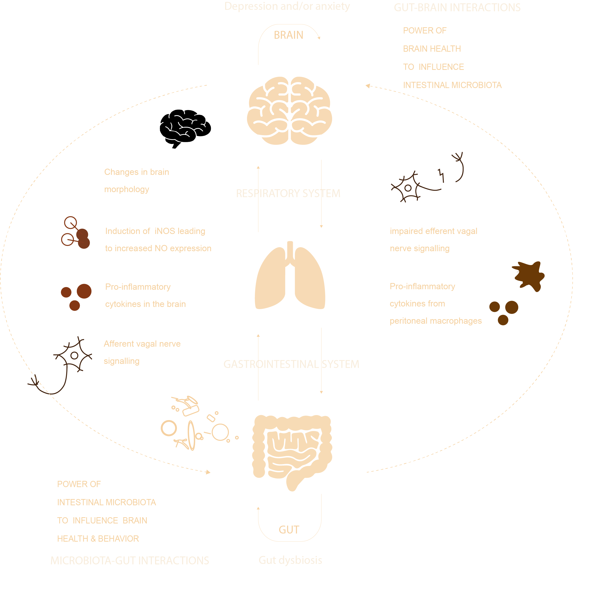
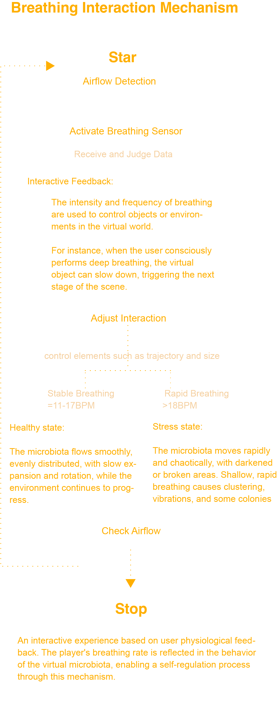
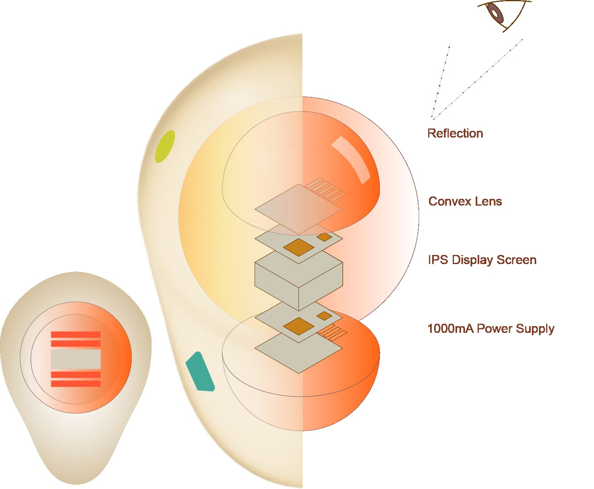

This section outlines the conceptual design framework and preliminary sketches, representing extended reflections on the project "The Brainy Gut."



This technology combines micro-display screens with refractive optics inside a spherical lens to create compact immersive visualization.

The visualization reflects breathing patterns influencing gut activity, forming a responsive virtual ecosystem.